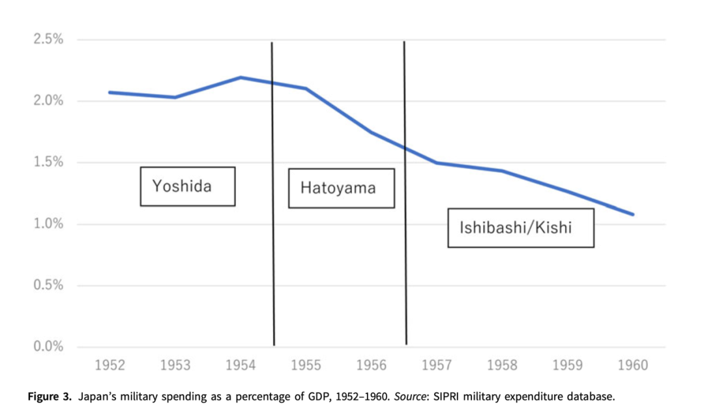
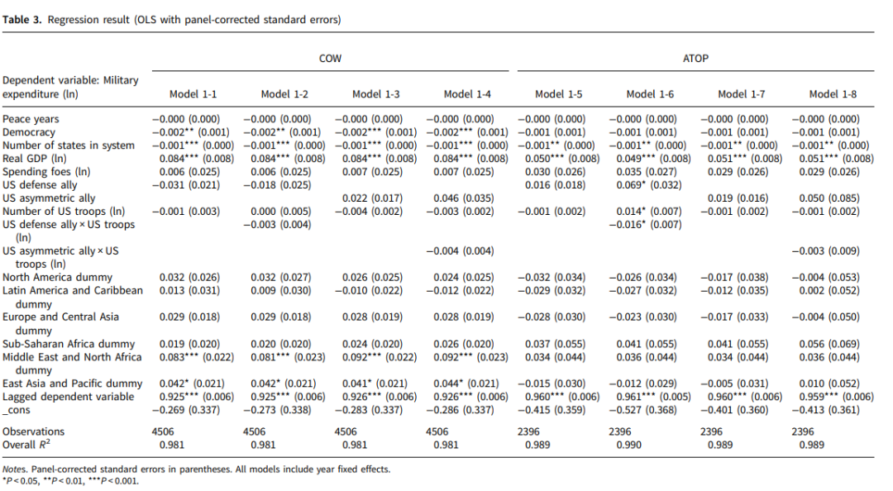

收录于合集

解构“吉田主义”：日本军费开支与经济增长
作者： 保城广至（Hiroyuki Hoshiro），东京大学社会科学研究所教授，研究方向为日本外交、社会科学方法论和国际关系理论。
编译： 黎开朗（国政学人编译员，立命馆大学国际关系学院）
来源： Hoshiro, H. (2022). Deconstructing the ‘Yoshida Doctrine’. Japanese Journal of Political Science , 1-24. doi:10.1017/S1468109922000019
导读
长期以来，“吉田主义”被作为解释日本战后外交政策的分析概念被学者广泛地使用。然而，鲜有学者去质疑吉田主义本身。本文作者首先厘清了吉田主义作为一个分析概念的起源和具体内容。 吉田主义是由（1）与美国结盟实现的日本安全；（2）最低限度的军备和军费；（3）重视经济复苏和增长这三个支柱所构成，并且还有向海外市场的扩张和避免卷入国际争端这两个显著的特征。 接着，作者解释了为何战后日本外交政策会被称为吉田主义的三个原因，并通过查阅相关历史文献和采用量化的研究方法对这三个原因依次进行了反驳。 文章通过数据检验证，证明了 日本的低军费开支并不是导致日本经济高速增长的原因 。最后作者得出结论认为必须抛弃吉田主义作为未来日本外交政策研究的基础。
吉田茂作为日本战后最有名的首相之一，备受学者的青睐。高坂正尧和原彬久等日本一流政治学者纷纷为其单独著书，高坂更是在书中毫不掩饰他对吉田的赞美之情，称其为“战后日本最杰出的政治家”。一直以来他重经济、轻军事的“吉田路线”被公认为是战后日本外交政策的根基。永井阳之助甚至认为只要日本的经济部门拧成一股绳，继承吉田主义的正统，坚守保守本流的话，那么吉田主义就会永远持续下去。然而日本并没有坚持低军备的政策，近期日本军费占GDP的实际比重已经超过了1%，并且还有超过2%的势头 。日本军费增长是否会再次导致日本军国主义的复辟也是日本研究者今后需要关注的重点。 此外，作者敢于挑战高坂等老一辈政治学者的精神值得年轻一代学习，尤其是一些被学界视为共识的外交政策分析概念是否经得住实践检验仍然值得我们审视和思考。
摘要
战后日本外交政策一直被公认为是基于“吉田主义”（Yoshida doctrine）或“吉田路线”（Yoshida Line）之上，即前日本首相吉田茂的战略，在依靠美国军事安全并保持最低限度防卫力量的同时，注重经济复苏和增长。本文重新考察了吉田主义，参考了多种相关争论和证据，得出结论认为 战后日本外交政策不应被称为吉田主义或吉田路线 。吉田主义是一个被研究者创造的分析概念来为日本外交政策辩护和回应国内外对于低水平的军费开支的批评（尽管经济很繁荣）。不同于其他的外交政策主义，作者认为吉田主义没有被称为一个“主义”的价值。此外，支持这一主义的观点并不是基于明确的证据，而仅仅是代表吉田的印象和有限度的防卫支出与高度经济增长之间的虚假相关性。本文的分析揭示了吉田主义在根本上存在缺陷。因此，本文坚持认为有必要抛弃吉田主义作为未来日本外交研究的基础。
01
什么是吉田主义？起源和文献回顾
吉田主义指的是由吉田茂首相在50年代提出的一种外交政策方针，并且于60年代被随后的政治家（尤其是池田勇人和佐藤荣作）所建立。 吉田主义基于三个主要的支柱： 通过与美国结盟实现的日本安全、最低限度的军备和军费、以及重视经济复苏和增长。 这些支柱有因果联系，而非同时相关。美日同盟导致了日本的最低限度军备，而这又推进了经济复苏并实现了经济增长。除了以上三个支柱以外，还包含了两个显著的特征： 向海外市场（尤其是亚洲）的扩张和避免卷入国际争端。
根据日本外交政策研究者的共识，吉田主义或路线这一概念起源于高坂正尧在60年代写的一篇文章。高坂着眼于吉田如何指责美国对日本再军备的强烈要求，进而关注经济复苏和增长。这具体指1951年初的杜勒斯- 吉田会谈（Dulles-Yoshida Talks）以及1953年10月举行的池田-罗伯逊会谈（Ikeda-Robertson Talks）。然而，高坂并没有用“吉田主义”这一术语，这一术语则是在70年代末由西原正、永井阳之助和肯尼斯·派尔所创造，在80年代开始被明确地使用。吉田主义起初是西原用来回应日本缺乏外交战略的批评，他认为这一战略是由吉田构想并被其继任者所继承，所以应该被称为“吉田主义”。在美国和日本国内一些外交家要求日本提高军备的背景之下，永井阳之助在1984年发表的一篇文章中赞扬了吉田主义。对于他而言，吉田主义具体指的是基于“防卫最低限度主义”（defensive minimalism）的“保守本流的外交路线”（conservative mainstream approach to foreign relations）。而美国历史学家肯尼斯·派尔提出的观点则与永井类似。这两个例子都把吉田主义的基础归于吉田在杜勒斯- 吉田会谈中拒绝美国提出的再军备的要求，并认为吉田主义在这些会谈中成型。
基于吉田主义的外交政策并没有在吉田内阁时期及接下来的几任政府内成功，而是在鸠山一郎等吉田政敌的政府之后，即池田勇人和佐藤荣作的政府中被建立。此外，通常认为直到修正主义者小泉纯一郎和安倍晋三上台之前，日本一直在被吉田主义指导。虽然对日本实际的军事实力有不同的意见，但日本一直把防卫开支限制在了GDP的1%以内，并且相比较其他国家，日本一直是在追求经济中心主义。因此，可以说吉田主义指导了日本超过40年之久。
02
20世纪后半叶的日本外交被称为“吉田”主义或路线的三个原因
作者在此给出了20世纪后半叶的日本外交为何被叫做吉田主义的三个原因，并依次进行了反驳。
第一、吉田卸任之后仍在延续的外交政策。例如，吉田茂签署了《美日安全条约》，并允许美军留在日本，这些政策一直延续至今。如上所述，“吉田主义”的支持者强调与美国结盟以遏制军备竞赛与实现经济复苏和增长的因果关系。 而这一点的问题在于吉田主义定义的外交政策（1961年后的美日同盟和GDP1%以内的军事支出）没有丝毫变化。 并且日本经济也在90年代停滞，自21世纪以来没有变化。然而由于有证据表明自安倍晋三的第二届政府以来，日本经济出现了复苏，因此不可能通过主张抛弃吉田主义来解释本世纪日本安保政策的变化。 此外，这一点的问题还在于如果政治家的意图与实际结果相匹配，那么其政策就可以被视为是成功的。 评估一项政策是否产生了规划者预期的适当结果，有必要使用不同的方法从不同的角度对其进行评估。即便是短期的政策效果尚且需要仔细评估，但吉田主义的支持者在评估长期政策效果时并不一定追求检验因果关系（最低军费开支与经济增长之间）。吉田的蓝图可能确实在10年后得到了实现，但其过程可能与当初吉田所想的有出入，而吉田主义学者（或日本外交研究者）忽视了这一可能性。作者将在本文中利用定量的研究方法证明吉田主义三大支柱的因果关系存在虚假的相关性。而这将得出最终结论，日本的轻军备导致了经济增长——这一大多数日本外交政策研究者接受并通常不质疑的前提——只不过是主观和基于偏见解释的结果，而不是实证分析的结果。
第二、仅限于吉田内阁的政策决定。这一点是关于吉田拒绝美国要求大规模重整军备时的“历史事实”。 然而，90年代出现的“吉田主义的修正主义”（Yoshida Doctrine revisionism）重新考察了杜勒斯-吉田会谈和池田-罗伯逊会谈。 由于这两个例子对吉田主义有重要的象征意义，所以修正这些历史事实将会对吉田主义的论述造成重大的打击。
最后、一些政策符合吉田强调经济而非军事力量的形象，尽管吉田内阁实际上并没有这样做。而作者认为把吉田的成就（责任）归于他没有做过的事是不妥的。 例如，西原将通过赔款扩大对东南亚的对外贸易列为吉田主义的特征之一，但实际上只有缅甸在吉田政府任内签订了赔款协议。 因此，把日本向海外市场的经济扩张全部归功于吉田政府是非常不合理的。此外，不参与国际争端这一特征也存在问题。 最近的研究已经表明吉田政府比后来的政府更积极地参与国际冲突，作者将用吉田对中国的积极政策和日本参与朝鲜战争这两个例子进行佐证。
03
再考外交政策主义：吉田主义不同寻常的本质
作者在此首先探讨了“主义”（doctrine）的定义。如果是宽泛的定义的话，那么历史上的每个政府都可以说是有一个外交政策主义。而实际上，Edström分析了1952年至1993年日本政府的施政方针演说（shisei hoshin enzetsu）和所信表明演说（shoshin hyōmei enzetsu），从而将外交政策主义归为这一时期的每一届政府。然而，根据这个定义，由于没有具体的政府政策或政策演讲明确地阐释吉田主义的三个支柱，所以吉田主义并不能被称为是一个外交政策主义。
接着作者对美国外交政策主义进行了分析，总结出美国外交政策主义必须具有的一个特征， 即政治领导人在特定地点和时间明确宣布其政策 。而因为没有明确的政策声明，所以吉田主义并没有表现出这一特征。此外，在吉田政府结束时，没有办法预测日本将同时实现最低限度的军备和经济增长。因此，吉田主义在外交政策主义中是独一无二的，并且不符合被称为“主义”的标准。
虽然永井和西原坚持认为这一主义与吉田的意图无关，或者这些政策从来没有向公众阐释过，但还是有一些研究人员和日本人继续支持这一天真的假设，认为吉田茂决定了日本战后的外交政策。而一部分责任也要归咎于70年代和80年代的学者们随意地使用了这个不合适的术语，鼓吹了它的建立并接受了它。
04
吉田主义的修正主义与50年代的日本外交政策
然而，即便日本的外交政策并没有通过一个主义的形式被宣布，那么“吉田路线”这一术语是否合适？作者认为将“吉田路线”作为解释日本外交政策的概念性术语并不合适，原因有二。在具体论述之前，作者认为有必要点出一个历史事实， 即吉田并没有打算让日本永久保持最低限度的军备 。吉田相信军事实力是一个主权国家的特征，对日本独立并在财政上可行的情况下建立一支国家军队毫不犹豫。尽管这不是吉田的本意，但这三大支柱在20世纪50年代初吉田任职期间和之后成为了日本的特征，这就是为什么日本的有限军备会被称为“吉田主义”。
首先，吉田在20世纪50年代早期的美日谈判中拒绝了再军备，为最终实现最低军事战略奠定了基础。但随着90年代日本政府内部文件的公开导致了外交政策史学家批判性地重新评估了吉田政府的外交政策，以及长井的“吉田主义”和高坂对吉田的评估，即“吉田主义的修正主义”。政府内部文件表明，日本同意美国开始再军备，尽管程度有限，形式是建立一支五万人的保安队。同样的，虽然池田- 罗伯逊会谈通常被认为是日本抵抗住了美国向日本施加再军备的压力，但90年代的文件证明了当时的艾森豪威尔政府已经决定不再向日本施加压力。因此，池田- 罗伯逊会谈并不是关于日本防卫目标的真正谈判发生地。而在避免卷入国际争端这一吉田主义的特征方面，作者也举出了两个反例。 第一，吉田自己提出的对中国的“逆浸透”（counter infiltration）计划。 近期的研究表明吉田曾有计划派日本平民前往中国大陆来颠覆政府。他不仅积极地向美国提出了这一想法，还积极地与美台加强了情报合作。虽然该计划并没有实现，但吉田对美国对华政策持批评态度，认为日本能够把中国拉出共产主义阵营。 第二，日本对朝鲜战争的介入。 日本不仅向美军提供了基地和物资，还向朝鲜派遣了“日本特别扫海队”（Japanese Coast Guard Special Sweepers）。虽然此后日本避免卷入国际争端长达数十年，但这却并没有发生在吉田政府任内。
第二，吉田政府没有实施将国防开支保持在GDP的1%以内以维持最低限度军备的政策。 相反，吉田政府在军事上的花费比日本历史上任何一届政府都要多。虽然吉田与鸠山一郎和岸信介等政敌在再军备问题上看法不同，后者对再军备的态度更加积极，但近期的研究已经表明在主要的外交政策方面吉田与其政敌并无区别。在军事开支方面，吉田时期的军事开支达到了最高，超过了GDP的2%，而随后吉田政敌的政府都缩减了国防开支。这一事实意味着个别政客的政策偏好不会影响50年代的日本防卫政策。因此，将吉田这单单一位政治家作为日本低军费开支的动机不仅是不恰当的，而且也与相对军费开支（占GDP和国家预算的百分比）在其执政期间达到峰值的事实相反。

图一：日本军费支出占GDP的百分比
以上的讨论给吉田主义带来了两个负面影响。 第一，吉田主义者的支持者认为吉田路线实在50年代末期中断，并在60年代重新出现，这并不符合事实。第二，个别政客的政策偏好并没有影响50年代的日本外交。 本文作者认为国际环境（主要是美国的影响）和国内预算限制等结构性因素在当时太过强大以至于压制了日本政治领导人对于外交政策原本的想法。
除了吉田主义以外，日本军费开支受到限制的原因是： （1）日本宪法禁止保留除自卫以外的军事力量（2）再军备不一定得到公众的支持（反军事主义文化）（3）自1976年内阁决定国防计划大纲以来的体系可持续性（4）推卸责任的战略（5）和平主义、反传统主义和对被牵连的恐惧。
05
检验塑造吉田主义的因果关系
作者在本节主要检验了与美国结盟、提供基地和抑制国防开支之间的因果关系。
首先作者探讨了美国驻日军队数量与军费开支之间的关系。 作者发现这两个变量并不呈负相关，而是正相关。 这是因为在吉田政府时期，对美国的国防贡献占了所有军费开支的一半。虽然50年代初有大量驻日美军，但日本的军费开支依然很高，这一事实与吉田主义主张的美国驻军导致日本军费开支减少的因果关系并不相符。 作者进一步指出美国驻军数量与军费开支的关系并不明确。 在冷战时期，西德的国防预算占GDP的比例在3%左右，但在1990年之后，随着美军数量的减少，国防预算下降到了1%的范围内。而法国在60年代末撤走了大部分美军，但撤军后并没有迅速增加军费开支。
然而，日本国防开支受到限制仍有可能不仅跟驻日美国军队数量有关，还跟美日结盟有关。本文作者使用包括日本在内的全球数据集进行定量分析，来检验与美国结盟和提供基地以确保轻武装之间的因果关系。既有的一些研究已经表明盟友的数量不会导致一个国家军费开支的减少，恰恰相反，至少有一个盟友的国家比没有盟友的国家有更高的军费开支。那么把盟友限定在世界上最大的军事强国美国，是否会影响军费开支? 本文的定量分析使用了Böhmelt和Bove的复制数据集，他们发现只将11个变量中的6个作为自变量也并不会改变结果，分别是：（1）自上次国家间军事冲突发生后的年数，（2）政治民主指数得分，（3）当年存在国家的数量，（4）对数变换后的真实GDP，（5）对数变换后敌国的军费开支，（6）对数变换后本国的军事支出。除此之外，本文还试图检验以下五个自变量是否影响军费开支：（1）如果该国与美国有防卫联盟，则虚拟变量取1，（2）如果存在只有美国有防务义务的非对称联盟，则虚拟变量取1，（3）美国每年驻军数量的对数变换值，（4）第（1）和第（3）项之间的交互项，（5）第（2）和第（3）项之间的交互项。本文综合使用了联盟条约义务和条款（ATOP）和战争相关因素数据库（COW），并进行了稳健性检验。本文作者使用了面板校正标准误（PCSE）方法进行最小二乘回归（如下图）。 结果显示与美国结盟和美国驻军数量并不会影响盟友的军事支出。
**
**

图二：不同自变量对军费开支的影响
此外，作者还重新考察了低水平军备与经济增长之间的因果关系，认为其存在以下几个问题。 第一，两者的联系只停留到了80年代，这是因为日本经济自90年代陷入停滞的同时，军事开支仍保持在GDP的1%以内。第二，此前没有任何经济研究阐明政府抑制军费开支是导致日本经济增长重要因素的因果机制。第三，吉田主义理所当然地认为，克制的国防开支与经济复苏和增长之间存在互换，但在两者之间二选一是不恰当的。 事实上，所谓的霸权国可以同时实现经济增长和军事扩张。即便不是霸权国，战前的日本就是一个军事和经济大国，实现了“富国强兵”（rich country，strong army）。
06
推动日本经济增长的因素
作者在此给出了几个推动日本经济增长的因素。
首先是推动经济增长的三个前提条件。 第一，1947年到1948年专注于煤炭和钢铁生产的“倾斜生产方式”（Keisha Sesan Hōshiki）。第二，通过1949年经济紧缩政策来重振市场经济机制，即“道奇路线”（Dodge Line）。第三，1950年朝鲜战争时期的“朝鲜特需”（Chōsen tokuju）。
**
**
而1955年到72年日本的高速经济增长是由于以下7个原因： （1）私人资本投资需求上升，（2）资本积累，（3）以全要素生产率上升为代表的劳动生产率长期上升，（4）产业结构变化，（5）大规模基于制造业雇佣机会的出现，（6）个体工商业的增长，（7）以耐用消费品支出增加为代表的消费扩张 。这些原因里与吉田主义有关的是资本积累，然而由于日本财政政策直到70年代才开始扩张，因此抑制军费开支并没有导致高速经济增长。此外，70年代日本经济饱受过度储蓄的困扰，但削减军费开支并没有提供解决这一问题的药方。
07
军事扩张与经济增长
从理论上讲，国防工业对经济既有正面影响，也有负面影响。然而吉田主义只是片面地强调了负面影响中的挤出效应（crowing out effect），没有系统性地分析军费支出与经济增长之间的关系。既有的定量分析表明结果会因经济发展的程度、国际环境以及民主程度而有所不同。此外，还有学者认为二者的关系是非线性的。
如果只考虑日本，军费开支和经济增长之间的关系是怎样的？既有的研究表明，政府效用函数中的规模弹性为1.1079，证明在GDP的1%以内的日本国防预算很低。而增加防卫装备和人员可能会显著提高其效用。然而，日本政府没有增加军费开支。即使70年代后需求严重短缺时，也没有通过军费来吸收。因此，限制军费开支导致经济增长是一个伪命题。
08
结语：为什么“吉田主义”会被确立并得以延续？
吉田主义在80年代的确立并不是因为历史学家根据政府内部材料重新评估了吉田政府的安保政策。而是80年代日美经济摩擦加剧，日本的低国防开支被美国批评为“安全上的搭便车”，日本国内也出现了军备扩张的倡导者的情况。 出于对这种情况的担忧，永井阳之助在吉田那里找到了解决办法，将其外交政策命名为“吉田主义”并认为这种政策一直延续至今。 永井的说法是对当时日本外交立场的肯定并且是一种对日本加强军事力量的规范性警告。 此外，作者认为高坂正尧这一在日本学术界富有影响力的学者对于吉田主义的赞美与笃信也是十分重要的 ，甚至可以认为挑战吉田主义等于是驳斥高坂的意见。因此，吉田主义在日本学术界仍占据主导地位，鲜有学者敢于挑战。 吉田主义最后一个特点是富有吸引力的同时，解释力很低。 吉田主义能够以统一的方式同时解释日本的低军费和经济的高速增长。然而，正如本文所示，吉田主义是一个非常模糊的分析概念，并且与客观历史事实不符。尽管通常认为日本的外交政策在小泉纯一郎和安倍晋三等修正主义者上台后发生了变化，但实际上被吉田主义所定义的日本外交政策没有发生丝毫变化，因此通过主张吉田主义的改变来论证本世纪日本安保政策的变化是不可能的。而为什么日本的外交政策会变得越来越积极，以及这究竟为什么会被称为是一种“变化”将是未来日本外交研究的主题之一。作为本文的结论，作者认为必须抛弃吉田主义。
词汇积累
吉田主义 Yoshida doctrine
吉田路线 Yoshida Line
杜勒斯-吉田会谈 Dulles-Yoshida Talks
池田-罗伯逊会谈 Ikeda-Robertson Talks
吉田主义的修正主义
Yoshida Doctrine revisionism
日本特别扫海队
Japanese Coast Guard Special Sweepers
富国强兵 rich country，strong army
逆浸透 counter infiltration
挤出效应 crowing out effect
审校 | 秦子宁 尤力
排版 | 王佳怡 刘美彤
文章观点不代表本平台观点，本平台评译分享的文章均出于专业学习之用, 不以任何盈利为目的，内容主要呈现对原文的介绍，原文内容请通过各高校购买的数据库自行下载。

国政学人
支持学术公益与知识传播
微信扫一扫赞赏作者 __赞赏
已喜欢，对作者说句悄悄话
取消 __
发送给作者
发送
最多40字，当前共字
上一页 1/3 下一页
长按二维码向我转账
支持学术公益与知识传播
受苹果公司新规定影响，微信 iOS 版的赞赏功能被关闭，可通过二维码转账支持公众号。